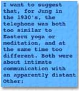

| 1. In his seminal study The Function of Language in Psychoanalysis, Lacan briefly mentions "the technique known as Zen" during a discussion about the analyst spontaneously deciding to end the analytic session. Elsewhere, in the same work, Lacan makes a couple of references to Hindu philosophy. They are equally brief and enigmatic.(1) Why does Lacan look Eastwards at these moments? Who is looking? What is seen or evoked? Why are these particular fragments of Eastern religiosity summoned at these moments? How are they placed in the text? What meaning is, or can be, given to them?
2. Turning his gaze Eastward, summoning Eastern religiosity, suddenly, into the story, is not peculiar to Lacan alone. In the middle of his 1929 essay on surrealism, Walter Benjamin briefly, but dramatically, tells of his encounter with some Tibetan Lamas who were staying in the same hotel in Moscow. (2) It marked a significant surreal moment for him, evoking an exotic Tibet still full of magical possibilities. 3. There is a whole story here of the Western telling about Tibetan religion, about the ways it has been summoned and incorporated.(3) 4. In 1939, in his Psychological Commentary on The Tibetan Book of the Great Liberation, Jung wrote: "yoga in Mayfair or Fifth Avenue, or in any other place which is on the telephone, is a spiritual fake".(4) He was, of course, issuing a warning about Westerners superficially adopting Eastern spiritual ideas and practices without changing their own ways of living. However, given that Jung was commenting on a Tibetan text, it is somewhat ironic that in 1921, in accordance with the wishes of the Tibetan government, Lhasa was connected to the telegraph and that by 1940 the Dalai Lama had his own telephone.(5) 5. Why did Jung reach for the telephone at this moment? How is it placed in his text? What meanings can be given to it? 6. It would be simple to say that such questions are trivial, that it is just picking at Lacan or Jung's opus. But surely such a sentiment cannot be upheld in, of all things, a psychological text, one in which slips of the tongue, or moments of distractedness, or of forgetfulness or exaggerated emphasis, are used as doorways into the unconscious, the underworld, into another layer of metaphoricity. 7. I am particularly interested in these brief glimpses of other stories that are revealed in fragments embedded within a larger text. They can be read as moments of intersection, as if two stories are crossing paths. As with slips of the tongue, another level of textuality reveals itself. I have found them to offer a valuable and provocative way of engaging with bodies of ideas. Not only am I interested because they give us another way of reading any text, but because they allow another way of interfacing between knowledges, between different modes of reflection, rather than attempts to construct integrated synthesies. Indeed, at another moment in his text, Lacan briefly invokes Jung's ideas - of course, as an example of error compared with Freud's - thus setting up another weave of possible intersections that this paper will begin to follow and, sometimes, (un)ravel.(6) 8. Most of my work lies along the interface between cultural studies, postmodernism and the dynamic psychologies. The question of how various knowledges interface or engage with each other is therefore particularly important for me personally. It is also a crucial question within postmodern theorizing itself, characterized as it is by fragmentation, radical pluralism, a disdain for hierarchies of truth - especially in the light of an inevitable equation between power and knowledge, and, as Lyotard puts it, an incredulity towards metanarratives, or an opposition to what Foucault calls totalizing discourses. 9. Just as Lacan is not alone in reaching for Zen, Jung is not alone in reaching for the telephone. It is a pervasive motif in twentieth century writing, from Kafka to Freud. Both Lacan and Jung's theoretical works are also not unique in being criss-crossed by moments of intersection. Indeed, this is characteristic of all theories. Now, one scarcely associates Lacan with an interest in Eastern religion anymore than one associates Jung with a deep concern about telephones. Similarly, when Freud makes his famous remark about psychological development in terms of the draining of the Zuider Zee, or his use of the establishment of nature reserves to argue for the necessity of phantasy as a place outside the demands of planning and routine, we scarcely believe him to be deeply interested in town and country planning.(7) 10. There are a number of possible responses to such moments. They can be dismissed as mere trivial embellishments. An attitude I've already commented upon. They can be considered to be unfortunate necessities in the early conceptualization of any science but which are later removed. For example, Althusser suggested that Freud's recourse to Maxwell's thermodynamic physics, or to Helmholtz, or to a whole host of images from anthropology to neurology, was a mere "temporary opacity".(8) It will be obvious that I do not subscribe to this belief in theoretical purification and cleansing. 11. In order to understand such moments we can turn to a play by Tom Stoppard: Rosencrantz and Guildenstern are Dead. These two characters have crucial, albeit minor roles in Hamlet. They briefly make their entrance at key moments in Shakespeare's play. Instead of following Hamlet's story, Stoppard follows Rosencrantz and Guildenstern's. At certain moments their story, of course, intersects with Hamlet's and then his tale in turn becomes merely a passing fragment.(9) 12. If we follow, not the tale that Lacan tells, but the story of the way the West has imagined Zen and Eastern religion over the past centuries, then Lacan fleetingly enters, late in the piece, as a curious but minor character. From such a perspective it is no surprise that he refers to Zen as a technique. The West has a long history of reducing Eastern religions to techniques, thereby stripping them of their religiosity and culturalspecificity. Zen is particularly susceptible to such a pragmatic move and Jung cautioned against it. On a deeper level, Lacan invokes Zen as an authoritative voice to support his own conclusions. Such a benign Senex, or Saturnian, fantasy about Eastern wisdom is not unusual, as Antonin Artaud wrote in his open letter to the Dalai Lama: "O Grand Lama, give us, grace us with your illuminations in a language our contaminated European minds can understand, and if need be, transform our Mind... ".(10) Lacan's invocation of Zen echoes twentieth century Western desires. It also accords well with Lacan's own theorizations, emphasising as they do the Law of the Father and founded as they are upon a rigorously systematic and abstract metanarrative.  13. Similarly, if instead of following Freud's tale of personality development we trace the story of the Western engagement with the land and settlement, his remarks form a minor, recent, geological strata in a history that goes back to ancient civilization. Such a history includes intersections with numerous other stories, including Goethe's crucial remarks at the very end of Faust, Part Two on land reclamation from the sea.(11) Freud's comments also strike a curious echo with the story told by the Nazis about their own settlement of recently drained ocean by "Aryan" families.(12) His reference to nature reserves also intersects an ongoing story about the struggle to establish and protect areas of unspoilt nature, green belts and national parks, which was reaching a critical phase in the interwar years.(13) 14. These Rosencrantz and Guildenstern moments disturb the centre of gravity of the main text. Like shifting ballast in the hold of a ship, they are capable of flipping it over, revealing its underbelly. The feminist philosopher, Michèle le Doeuff, for example, is outraged at the inability of a discipline to reflect on its own metaphorical layering, calling this its "internal scandal", its "shameful face".(14) Derrida points out how "White Mythology" has "erased within itself the fabulous scene which has produced it".(15) These refractive moments allow access to such a terrain, facilitate recovering such 'fabulous' scenes. They suggest the power of ornamentation (long regarded as mere embellishment), of comments from the margin, of not going with the grain that the author necessarily wishes us to follow. Such moments are crucial and inevitable. They reveal the essential hybridity of any text or theory. They weave it into a tapestry of other conversations. 15. Returning to Jung and the telephone, how can we insight such a cryptic reference? It is perhaps significant that just over thirty years earlier, in his 1907 study The Psychology of Dementia Praecox, Jung had written the earliest psychological commentary on the symbolism of this relatively new piece of technology.(16) 16. We could therefore initially follow the 'Jungian' grain of the text. From such a perspective Jung's comments about yoga occur at crucial moments both in his own individual psychological struggles and in the development of his opus. For example, he was himself using such practices as a form of psychic stabilization.(17) Then again, nearly all of his major writings about Eastern religion were undertaken between 1936 and 1944. In 1936, when his first works on Buddhism appeared, Jung was already a mature sixty-one years old. These works on Eastern religion formed a crucial link between his early ideas and the alchemical framework which was to dominate his thinking during the final twenty-five years of his life.(18) His dense and sophisticated commentaries on two highly esoteric Tibetan texts form the core of this transition period when Jung was feeling his way towards a richer notion of poetics or imaginal perception. 17. On the other hand, we could follow the story of the telephone. Jung's early, 1907, study has achieved the status of a minor classic in the psycho-history of the telephone and its impact on Western imagination. As such it can quickly be looked up in Avital Ronell's yellow pages.(19) Such a story about the telephone is itself merely a recent addition to the ongoing tale about technology and meaning. In his 1907 case-study Jung's remarks about the telephone are certainly not as disparaging as the ones he makes in 1939. In the earlier one, he accepts the psychological reality of his patient's fantasy phone, with its ironic messages, as a form of split-off personality.(20) 18. The situation is different in the Tibetan commentary and we can read his remark as a moment of intersection in the long process of Western fantasy-making around images of exotic Otherness. For example, around the same time that Jung was making his remark, others too found any association between telephones and Tibet untenable. One traveller groaned: "The telephone! Was there no place on earth where one could be protected from the curse?".(21) He promptly set out for Tibet blissfully ignorant of the telephone's presence at the heart of that sacred land. Many Westerners seemed desperate to imagine a land unconnected to the telephone or to other forms of modern communication. Telephones were, of course, firmly absent from James Hilton's extraordinarily popular 1933 fantasy of a Tibetan Shangri-la. 19. Therefore, paradoxically, while issuing warnings about the esoteric lure of Eastern religions, Jung was at the same time reinforcing a naive polarization which lay at the very heart of Western fantasies about East and West. 20. In Jung's 1939 commentary the telephone becomes a quintessential symbol of the acute onesidedness, the extraverted nature of Western civilization, its worship of objectivity and facts, its distrust of inner life, its loss of connection with the anima mundi, or world soul: "The seemingly universal and metaphysical scope of the mind has thus been narrowed down to the small circle of individual consciousness".(22) Yet, in his concern to warn about the fatal attraction of opposites, such as uncritical Western fascination with Eastern spirituality, Jung passes too quickly over the psychology of the telephone. 21. However, in the same commentary, Jung makes a crucial observation about other aspects of modern life: "Formerly, men called the gods unfavourable; now we prefer to call it a neurosis, and we seek the cause in lack of vitamins, in endocrinal disturbances, overwork, or sex" (23) or: "On a primitive level people are afraid of witches; on the modern level we are apprehensively aware of microbes. There everybody believes in ghosts, here everybody believes in vitamins".(24) Why didn't Jung make a similar connection between the psyche and the telephone? 22. Certainly Evans-Wentz, the translator who brought the two Tibetan texts not just to Jung's attention but to the West in general, was not averse to using the imagery of modern mass communications. He described the system of Tibetan Lamas in the following terms: "As from mighty broadcasting stations, dynamically charged with thought forces, the Great-Ones broadcast over the Earth that Vital Spirituality which alone makes human evolution possible".(25) Madam Blavatsky's Mahatmas, high in the Himalayas, guiding the spiritual destiny of humanity, provide an even earlier and more famous example of Western fantasy-communication with Tibetan wisdom. Long-range psychic transmission, telepathy, and astral communiques have been common notions over the past few hundred years. In 1931/3 Jung, despite being scathingly critical of Western Theosophy, had insisted that the "myth of the mahatmas ... far from being a nonsense, is... an important psychological truth".(26) He saw it as a way that the psyche struggled to find appropriate ways by which to communicate with Westerners and their modern world of globalism and new technologies: it is our psyche, constantly at work creating new spiritual forms and spiritual forces.(27) 23. I want to suggest that, for Jung in the 1930's, the telephone was both too similar to Eastern yoga or meditation, and at the same time too different. Both were about intimate communication with an apparently distant Other: the one seemingly on an outer plane; the other on an inner plane. How could such contrary forms coexist? Certainly this was not a new problem. For example, according to Paul Virilio, as early as the seventeenth century theologians had debated whether a Mass seen at a distance by means of the telescope was spiritually valid.(28) Indeed, to locate oneself in this brief intersection between Virilio's discussion about the geometry of the city and the Western history of optical ontology, could itself open up enticing vistas. 24. In 1907 Jung, on the verge of the crucial collaboration with Freud, was singlemindedly concerned about the new directions being taken by Western psychology, was eager to defend psychoanalysis and understood the telephone in a similar way to telepathy, seances, or other occult phenomena. (29) It was a form of communication with, and from, split-off personality fragments. However, by the 1930's he had long split with Freud, was deeply involved with Eastern ideas and was anxious to defend the differences between Eastern spirituality and Western psychology. This was critical in his defence against charges of mysticism and occulticism. Without realizing that he could, in actual fact, have lifted his own phone and dialled the Dalai Lama, Jung believed that one had to chose between picking up the phone and picking up the Tibetan text. From such a perspective, the two simply could not coexist. 25. Of course, we could also turn our attention to Jung's remarks about vitamins (only discovered in 1912) and locate them as a brief moment in the psycho-history of nutrition, health and place. Not only is this an enticing detour, it tempts us to speculate as to why both vitamins and telephones are mentioned in a commentary about Tibetan Buddhism. 26. These are just a few ideas in a process of unravelling a seminal Jungian text, of revealing how porous it is. I believe we should, wherever possible, avoid colluding with a text's narcissistic sense of its own coherence and density. In addition, by working from the edges, or across the grain, or by standing at the intersections, new possibilities are offered in the process of revisioning the historiography of Jungian ideas. 27. In such a process, the term hybridity is a useful concept and through it we can challenge notions of theoretical purity.(30) Both Lacan's and Jung's theories, for example, are hybrids, and are thoroughly permeated by other theories. They are porous to the influences and implications of these other perspectives. Both Lacanian and Jungian ideas not only bear the traces of these other knowledge systems, or other histories, but they are revealed as being at cross-roads that are still very much in use. The notion of hybridity sustains a dialogical space between seemingly disparate sets of ideas, without collapsing the one into the other, or wondering whether or not they are compatible. 28. The notion of heterotopia draws attention to the spaciality, the territoriality, even landscape of theory. Foucault writes: "the heterotopia is capable of juxtaposing in a single real place several spaces, several sites that are in themselves incompatible. Thus it is that the theatre brings onto the rectangle of the stage, one after the other, a whole series of places that are foreign to one another".(31) The word theory, is directly related to 'theatre' and we can imagine a theory less as a lens by which to view the world than as a place to be viewed, as a site of display. Lacan's text and Jung's 1939 commentary then become not coherent arguments but theatres wherein a whole series of otherwise disparate and even incompatible image-making processes are displayed. 29. I therefore want to conclude by suggesting five ways that these interruptive moments can be imagined. 30. As I've stressed throughout this paper, they can be imagined as intersections, as Rosencrantz and Guildenstern moments when one story crosses, often unwittingly, over another. At such moments one could stop following the story originally chosen and instead turn one's gaze to look along an entirely different path of fantasy-making. 31. The notion of theory as theatre also opens up another possibility. The main text then becomes less a linear narrative, than a mise-en-scene and the many references become as characters and places in a complex, multifaceted dramatical display. 32. As fragments of other stories, these moments can also be imagined geologically. The word 'fragment' is both noun and adjective. Such moments literally fragment the coherence of any text. 'Fragment' is related to 'fragilist' which suggests fragility, brittleness, delicateness, or easily broken 'weak' points in the text. Geologically these moments are like a fault, or fracture point, which reveals unseen layerings of deeper metaphoricity. They allow us access to a rich sense of the text's underworld. 33. Such a fracturing can also be associated with the process of refraction.(32) In this case, these fragments are not imagined as crossroads, nor as geological irruptions, but as a moistening that lays on the surface of the main text. They suggest a kind of fragile, delicate dewing of the main argument, one which rapidly evaporates in the glare of too much logos, or sunlight. Within such a fantasy we must keep our reading moist and light. Rather than fragment the text, these dewy layerings deflect and fragment our gazes, our readings, our expectations. Such a refraction, like the creation of a rainbow, reveals the polyvalency both of our readings and of the text itself. Finally, these moments can be imagined as rubbings, when a dominant text rubs itself against another, simultaneously polishing and erasing, foregrounding some fragment, highlighting it, whilst at the same time occluding the terrain from whence it comes.(33) The Zen master, by implication, rubbed by Lacan's text, has become a relic, an image rubbed into symbolic life by a century of differentiation and repetition, an Alchemical reiteratio by a West desperate for unassailable guides to ultimate wisdom. The image has been rubbed into sacred life. A profound exchange has occurred between touch and touched, a delicious, infinitesimal, mutual erasure: "in the same way as the compulsion to repeat ... has in view nothing less than the historizing temporality of the experience of transference, so does the death instinct essentially express the limit of the historical function of the subject".(34) The point of contact/exchange shines as the background disappears into the shadows. Rubbing theories. Reaching out to touch, to give the shining parts a reassuring rub. Creating power words. Theory becomes relic. The security of repetition: "the past in its absolutely real form... the past which reveals itself reversed in repetition".(35) In the ritual of exchange new bonds are established. Points of empowerment created.
34. As I mentioned at the very beginning of this paper, at one moment in his argument Lacan quickly brings Jung into his text in order to point out the error of his ways and then just as summarily dismisses him. Can we read this as an intersection, where their two stories momentarily cross? or is this where Jung is dragged unceremoniously into Lacan's theatre only to be, like Rosencrantz and Guildenstern, (mis)used and then murdered? ("Thus the symbol manifests itself first of all as the murder of the thing, and this death constitutes in the subject the externalization of his desire")(36)). Does Lacan's perverse invocation of Jung backfire and instead reveal the fragility, the brittleness, the geological weak point in Lacan's own text? Is it a moment when the dryness of Lacan's argument is gently moistened, a refractive dewing which bends our gaze away from the intended direction of his argument and instead turns our attention to the running dispute between Freud and Jung? Finally, is this a moment of rubbing, when, in the name of the Father (Freud or the Zen Master), Jung is simultaneously evoked and effaced, rubbed and rubbed out? (This could even be taken positively by Jungians, for, as an underworld character in Godard's Breathless concludes, there are only two options: "you can either go rusty or be rubbed out and it's better to be rubbed out".) Just to make sure Jung's memory doesn't return to haunt the new gang on the block, Lacan's editor and translator, Anthony Wilden, follows up with a body-blow by proclaiming Jung a heretic.(37) Now there's an interesting intersection....
|
Dr Peter Bishop is Associate Professor of Communications and Cultural Studies at the University of South Australia. His publications include: The Myth of Shangri-la (Tibet, Travel Writing and the Western Construction of Sacred Landscape; The Greening of Psychology (The Vegetable World in Myth, Dream and Healing); Dreams of Power (Tibetan Buddhism and the Western Imagination); An Archetypal Constable (National Identity and the Geography of Nostalgia).
This paper is a much reworked version of a talk given at the Centre For Psychoanalytic Studies, University of Kent, England in 1994. A revised extract of this talk was published as Dialing Jung: Tibet, Vitamins and the Telephone, in Harvest (London), 40, 1994, pp.77-83.